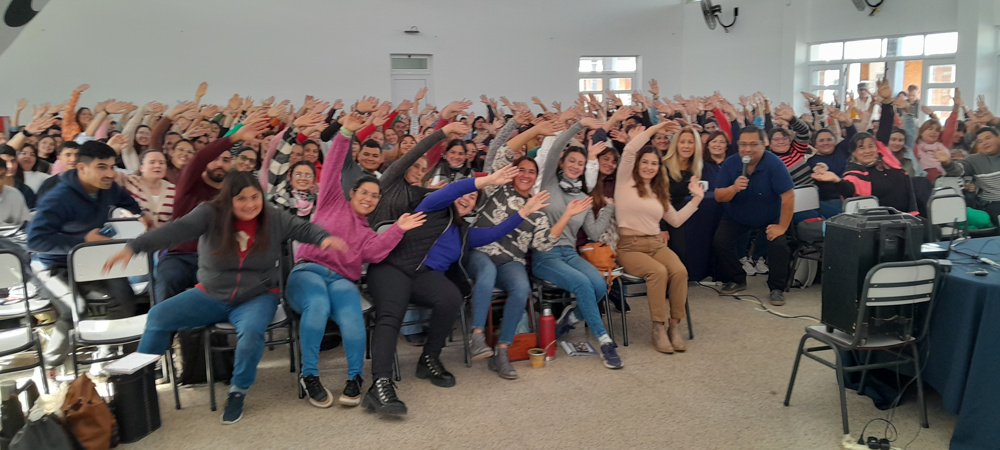
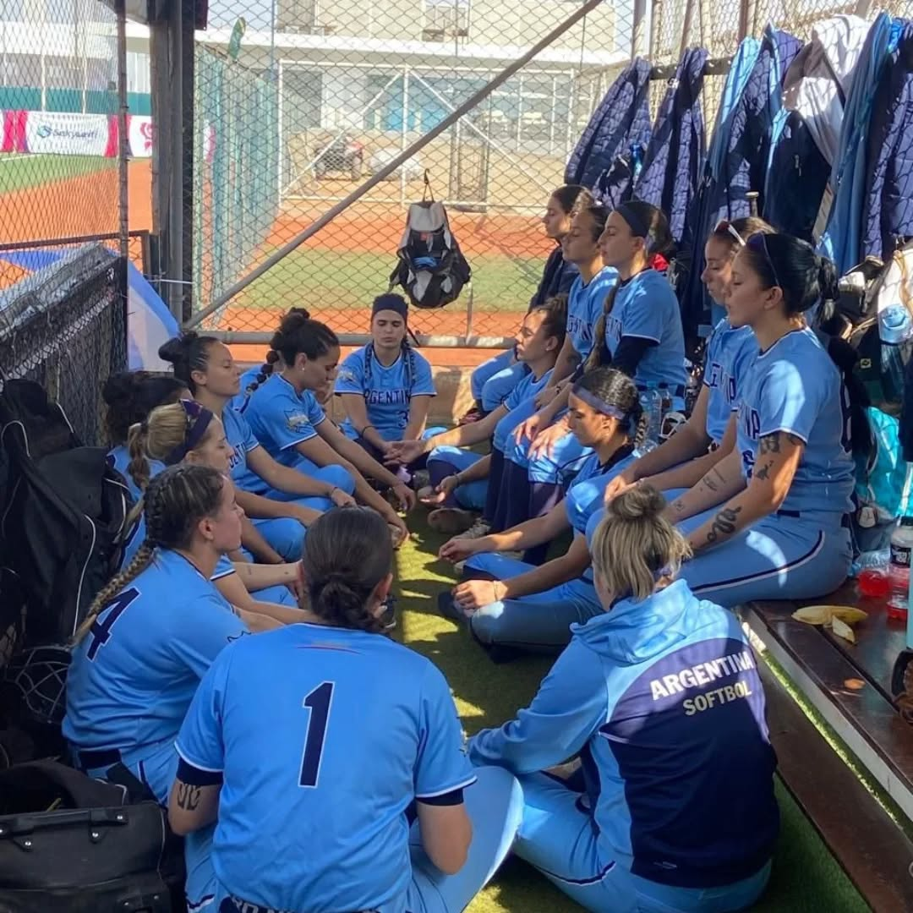

"La inspiración es la chispa, pero la biología es el motor. Optimizamos organizaciones desde su núcleo neurocognitivo."
Alineación de objetivos estratégicos, OKRs y optimización de eficiencia operativa.
Gestión directiva basada en neurociencias y transformación de climas institucionales.
Entrenamiento cognitivo-motor y toma de decisiones bajo alta presión competitiva.
Auditoría estratégica para organismos públicos e instituciones de la sociedad civil.
Despliegue de objetivos estratégicos para asegurar que cada nivel de la organización trabaje en lo que realmente mueve la aguja del negocio.
Optimización de flujos de información y protocolos de feedback para reducir el ruido organizacional y la fatiga por reuniones.
Maximizamos la capacidad de toma de decisiones bajo presión, garantizando un retorno real sobre la inversión en desarrollo de talento.
Como parte de la Inmersión Profunda, facilitamos la transición hacia estándares internacionales. Contamos con un equipo técnico especializado en la implementación de Normas ISO para asegurar la calidad e inocuidad alimentaria en sus procesos.


Selección Argentina
Consultor con más de 25 años de trayectoria. Ha brindado servicios de Capacitación y Coaching Ejecutivo para empresas multinacionales, Industria y se ha desempeñado como Coach en Neurociencias para Selecciones Nacionales de Sóftbol.
Neurociencias (UBA)
Liderazgo Educativo (UdeSA)
Liderazgo y PNL (ENEB)
Especialista Cognitivo Motor
"Ayudo a que las organizaciones recuperen humanidad, propósito y vida. Porque la ciencia optimiza el rendimiento, pero es el propósito lo que sostiene el éxito."
Biología de la resistencia al cambio en organizaciones complejas.
Estrategias de gestión y climas institucionales de excelencia.
Ciencia aplicada a la toma de decisiones bajo presión competitiva.
Ajustá cada dimensión según tu realidad actual y observá tu perfil en tiempo real.
Índice global
—
sobre 100
Más fuerte
—
Oportunidad
—
5 preguntas adaptadas a tu área. Obtenés un análisis inmediato con recomendaciones estratégicas personalizadas.